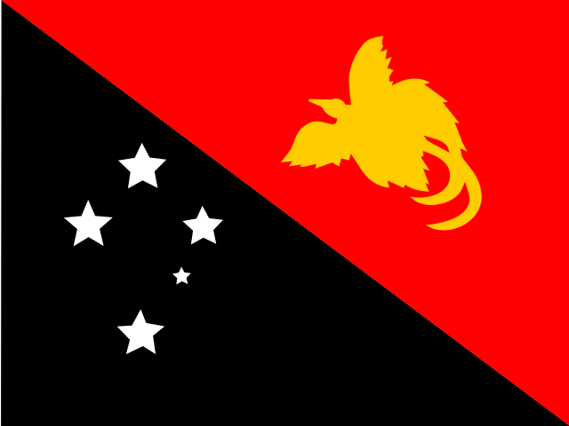

Papúa Nueva Guinea: bandera, capital y datos curiosos

- Capital
- Port Moresby
- Continente
- Oceanía
- Código
- PG
Papúa Nueva Guinea es un país de Oceanía y su capital es Port Moresby. Arriba ves su bandera: ¿la reconocerías entre cuatro opciones parecidas?
Dato curioso: Allí se hablan más de 800 idiomas.
Jugar a adivinar banderas Australia
Australia Samoa
Samoa Tonga
Tonga Vanuatu
Vanuatu